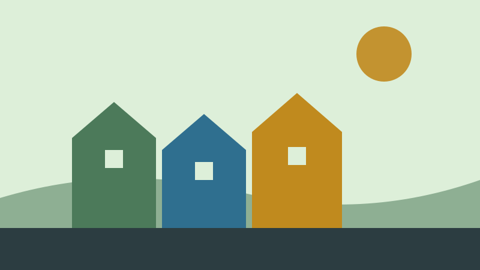

Botanikk
Et leserinnlegg om Knut Fægri, botanikk og hva du bør lese.
Vet du hva Knut Fægri, professor i botanikk, (sågar ceremonimester ved studentersamfunnet i Bergen) skriver om løvetann? At det e for mange av de! Nei, botanikk…det må du bare kunne. Shakespeare? vår egen Henrik Wergeland? Botanikere av dimensjoner begge to. Du må lære deg å beskrive naturen… prestekrage, blåklokke, rødkløver… de må ligge høyt oppe i bevisstheten, det må de bare. Du må kunne alt om blomster. Det botaniske studiet omfatter om lag 400 000 arter, og så, etter det, kan du starte med etnobotanikken. Det vil si, 400 000 er et høyt tall, men det kunne vært mye høyere om vi inkluderte sopp i det botaniske fagfelt, som noen stadig gjør, riktignok færre og færre.
Botanikken kan spores noen tusen år tilbake i tid, helt til oldtiden, der, spesielt inderne, hadde en utpreget interesse av å beskrive trær og planter og deres tilhørende egenskaper, blant annet det 4000 år gamle diktet «Rig Veda», som er ett av de første litterære bevis på aktiv inndeling av planter. Det er essensielt at botanisk allmennkunnskap består, du må bare kunne det. Så det du gjør er at du går på biblioteket og spør etter en eller flere av disse bøkene, som eg antar for å være nevnte Fægris fire viktigste verk:
- Über die Längenvariationen einiger Gletscher des Jostedalsbre und die dadurch bedingten Pflanzensukzessionen (1934)
- Quartärgeologische Untersuchungen im westlichen Norwegen I-II (1935-1940)
- Norges planter I (1958)
- Norges planter II (1960)
Ta gjerne med deg bøkene til Muséhagen ved Universitetet i Bergen og til det tilhørende plantehuset. Her leser og observerer du om en annen, prøv å finn levende eksempler på det du lærer om i bøkene, og prøv å gjøre deg noen tanker om plantenes struktur og metabolisme, og ikkje minst, slektskapsforhold. Oppsøk også gjerne din lokale botaniker for å diksutere funnene dine nærmere.
Takk,
HH